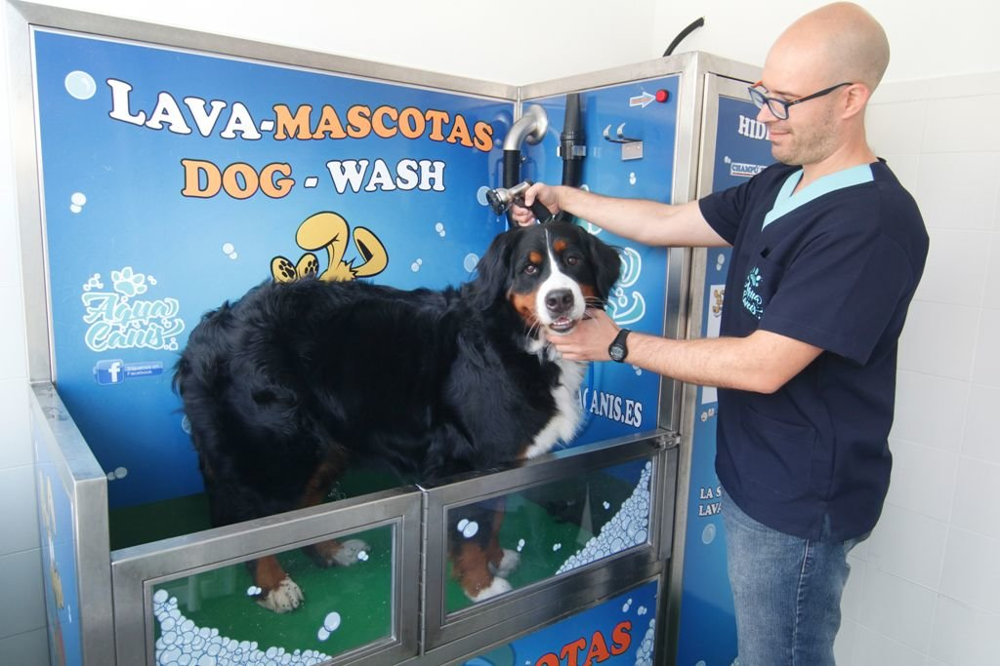

EL LAVADERO DE ADRIAN
NUESTROS LAVADOS

LAVADO BASICO
Lavado con agua, despues frotamos con nuestros super jabones ecologicos especiales para perros. Los tenemos de distintos olores y lo podremos elegir en cada lavado.
Después toca aclarar bien y un super secado. Por ultimo, nuestro toque maestro, un aceite ecologico para que el pelo de nuestro animal quede espectacular.
Tenemos la opción tmbién de aplicar antiparasitario si lo necesitais
¡ A partir de 5 € !
LAVADO BASICO
Lavado con agua, despues frotamos con nuestros super jabones ecologicos especiales para perros. Los tenemos de distintos olores y lo podremos elegir en cada lavado. Después toca aclarar bien y un super secado. Por ultimo, nuestro toque maestro, un aceite ecologico para que el pelo de nuestro animal quede espectacular. Tenemos la opción tmbién de aplicar antiparasitario si lo necesitais